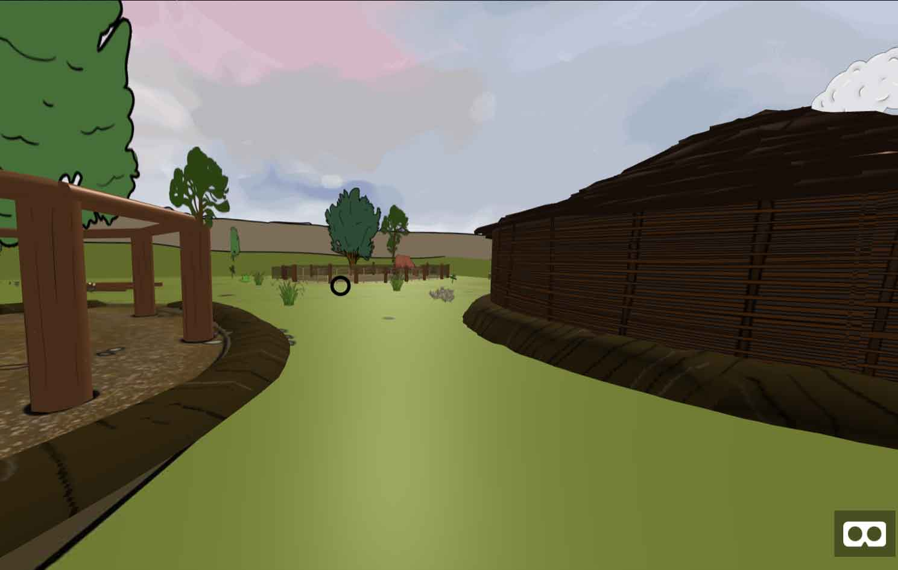
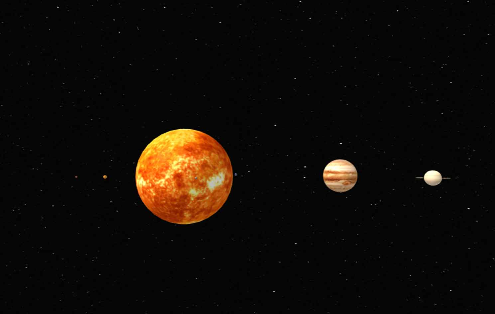

PandaPix
This example shows how we can use WebXR to enhance an image gallery.
Love Sculpture
In this example learn more about components and about the GLTF format.
Ava

Create virtual spaces with PNG images you already have on your website. Be sure to check audio works!
Solar System

This example shows how you can transform educational websites into spatial experiences.